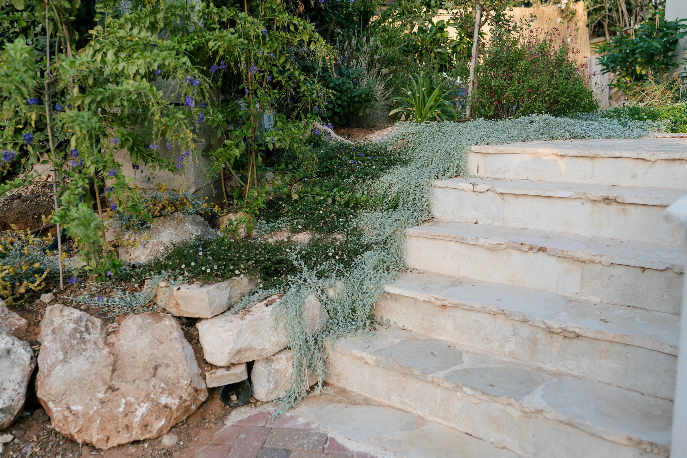
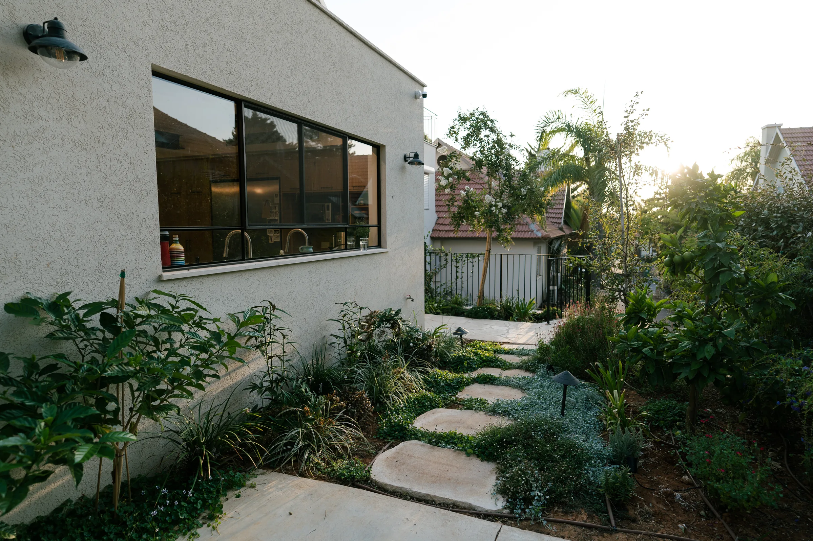
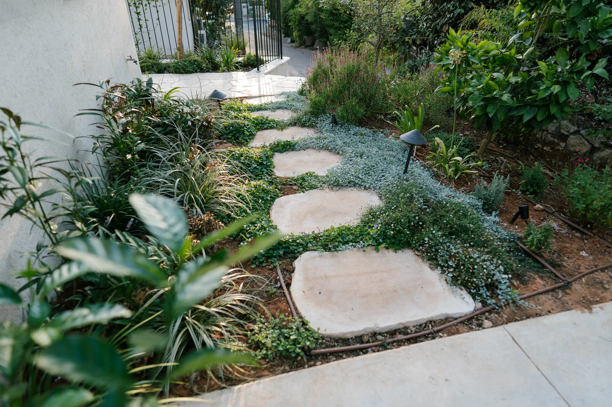
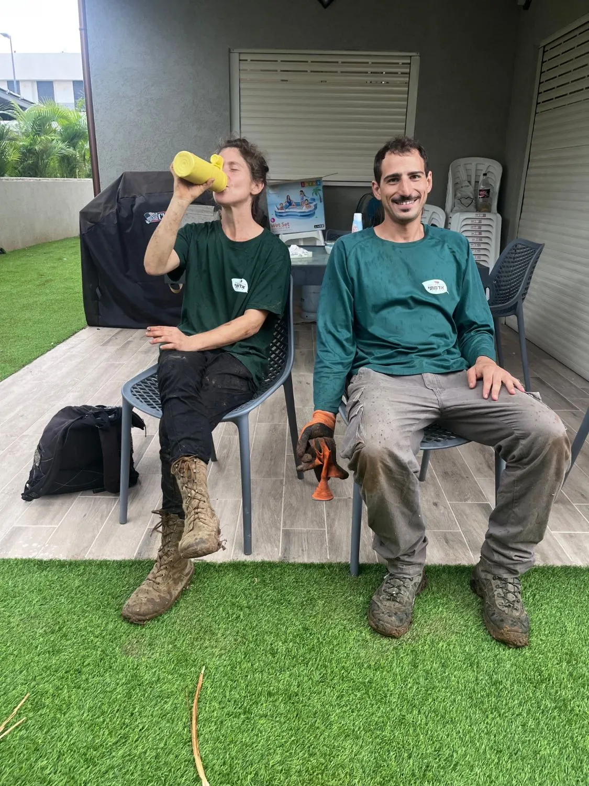
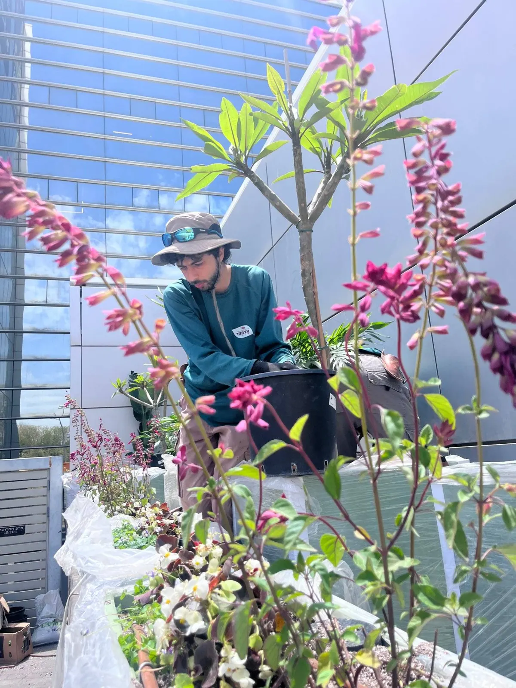
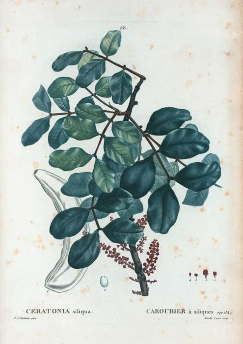

תכנון נוף וגינון ים־תיכוני
ברוכים הבאים לנוף וחורש, משרד לתכנון נוף וגינון ים־תיכוני. פועלים בכל הארץ, בהובלת איתי שסטצקי.
אנחנו מתכננים, מקימים ומטפחים גינות חיות, בהקשבה לאדמה, לעונות השנה ולאנשים שגרים בבית.
15 שנות ניסיון בתכנון, הקמה, שיקום ותחזוקה, בגינות פרטיות, מסחריות וציבוריות.



גינות שהקמנו
כל גינה מתחילה בצורך אחר: מתנת יום הולדת, פאטיו בלי שמש, רצועה צרה בכניסה, גינה שמזינה משפחה ומטופלים.
לכל הגינות שהקמנו
הגישה שלנו
לפני שבוחרים צמח, אנחנו מסתכלים איך האור נכנס לבית, מאיפה נושבת הרוח, לאן זורמים המים, מה רואים מהשכנים ואיך אתם חיים במרחב.
מתוך זה נולדת חלקת טבע ים־תיכונית שמחוברת לבית ולנוף.
עוד על נוף וחורש

גינה שלמה, מהחצר הריקה ועד הצל הראשון
אנחנו מתכננים ומקימים גינות ים־תיכוניות לבתים פרטיים בכל הארץ.
הצוות של נוף וחורש מקים את הגינה: טיוב האדמה בקומפוסט, השקיה בטפטוף, אבן ועץ, ואז הצמחים. איש קשר אחד לכל הדרך.
איך זה עובדגינה מטופלת, בלי ריסוסים מיותרים
תחזוקה היא לא רק כיסוח דשא. זה גיזום נכון, הזנה של האדמה, החלפת עונות וטיפול שמביא את הגינה לתוצאה שאליה תוכננה.
לתחזוקה

מי יגיע אליכם
צוות צעיר של גננים, אגרונומים ואדריכלי נוף שמגיעים מהשטח, שאכפת לו מכל צמח ומכל לקוח, ושמחובר לטבע של המקום. מי שבא לעבוד אצלכם בחצר הוא מי שתכנן אותה איתכם.
צוות נוף וחורש מבצע עבודות תשתית, השקיה, הכנת קרקע, שתילה ופיתוח. השילוב בין היכרות מעמיקה עם צמחייה לבין ניסיון ביצועי מאפשר לנו לנהל את העבודה באופן מדויק, לתאם בין בעלי המקצוע ולשמור על רצף מקצועי לאורך כל שלבי הפרויקט.
לתיאום פגישת היכרות


צמחים מקומיים ים־תיכוניים



מילים של לקוחות
״השירות שלו מעולה והוא איש נעים ומאוד אמין. העבודה שהוא עשה פשוט מדהימה. הוא היה מהיר ואמין והיה לי קל לסמוך עליו.״
״איתי היה מצוין! הוא היה אצלנו כמה פעמים ואנחנו ממשיכים לעבוד איתו.״
״אלוף ברמה גבוהה, איש מקצוע, נעים לעבוד איתו, עושה עבודה מדהימה ואחד הטובים שיצא לי לפגוש במקצוע.״
״הוא מגשים חלומות בתחום הגינון. אני נהנית מהעבודה שלו, מבין עניין, אינטליגנט, נחמד, מנומס ומאוד כיף לדבר איתו.״
״הוא מצוין, חמוד ועשה עבודה טובה. נעים לעבוד איתו. אני מאוד מרוצה ממנו.״
מה שואלים אותנו
כמה עולה להקים גינה?
זה תלוי בגודל השטח, בחומרים ובמה שכבר קיים בחצר. בפגישת ההיכרות נדבר על טווח תקציב, ואחרי תכנון האלמנטים תקבלו הצעת מחיר מפורטת, סעיף אחרי סעיף.
כמה זמן זה לוקח?
מהפגישה הראשונה ועד שתילה עוברים בדרך כלל כמה שבועות של תכנון, וההקמה עצמה תלויה בהיקף. העונה הכי טובה לשתילה היא הסתיו, עם הגשם הראשון.
חייבים לעשות הכול בבת אחת?
לא. אפשר להתחיל בתשתיות, בהשקיה ובעצים, ולהשאיר את השאר לעונה הבאה. לפעמים זה אפילו עדיף.
גינה ים־תיכונית באמת חוסכת מים?
צמחייה מקומית מכירה את הקיץ היבש שלנו. אחרי שהיא מתבססת, בשנה־שנתיים הראשונות, היא צריכה הרבה פחות השקיה מגינה רגילה.
מי מטפל בגינה אחרי ההקמה?
אפשר להמשיך איתנו בתחזוקה קבועה, לרוב אחת לשבועיים, או לקבל מאיתנו הדרכה ולטפל בה בעצמכם.
אתם עובדים לצד אדריכל או מתכנן אחר?
כן. קורה שמתכנן אחר מתכנן ואנחנו מקימים, או שאנחנו מקימים חלק מהגינה לצד בעל מקצוע אחר.
באילו אזורים אתם עובדים?
בכל הארץ. הבסיס שלנו בבת שלמה, בכרמל.
הגינה הבאה יכולה להיות שלכם.
ספרו לנו מה יש לכם היום, חצר, מרפסת או רצועה בכניסה, ומה הייתם רוצים שיהיה שם.
לתיאום פגישת היכרות